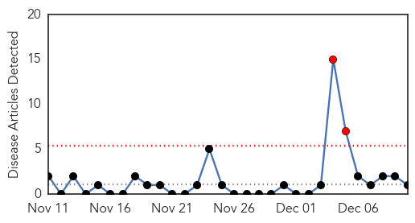
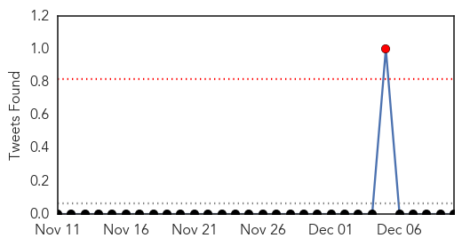
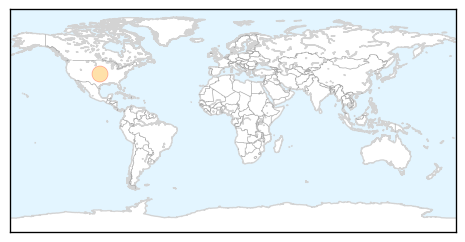
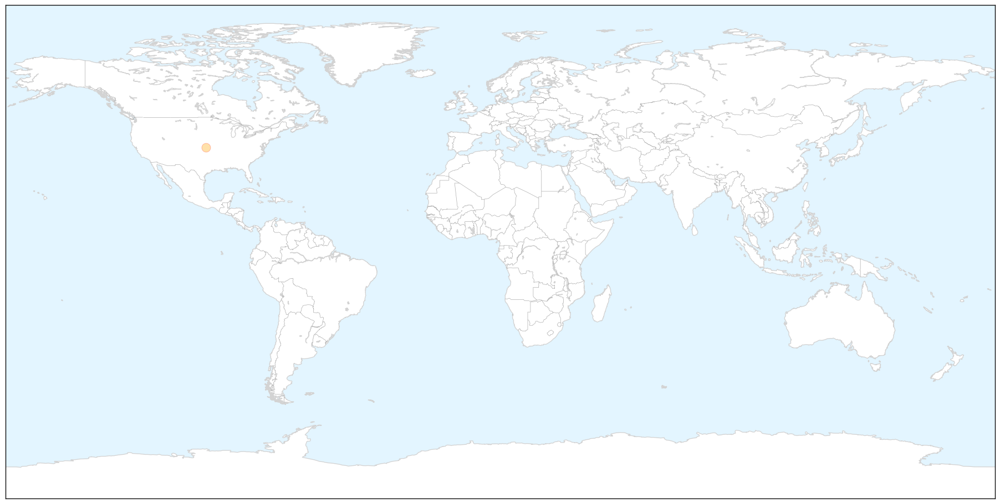
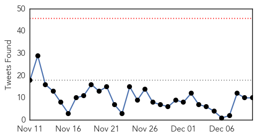
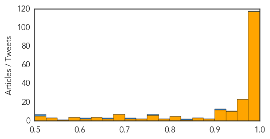

Swine Flu
30-Day Web Trend
2 alerts, 0 warnings

30-Day Twitter Trend
1 alerts, 0 warnings

Article Locations

X

Article Confidences

Top Articles:
Top Tweets:
-
No tweets found for Dec 10, 2014
Ebola
30-Day Web Trend
0 alerts, 0 warnings

30-Day Twitter Trend
0 alerts, 0 warnings

Article Locations


Article Confidences
Top Articles:
- 1.000
- Sierra Leone area to hold 2-week Ebola 'lockdown'
- 1.000
- Sierra Leone area to hold 2-week Ebola 'lockdown’
- 1.000
- The Portland Press Herald / Maine Sunday Telegram
- 1.000
- Why we need to mobilise survivors to help tackle the epidemic
- 1.000
- Ebola Death Toll Climbs Due To Rising Cases In Sierra Leone, Will Nigeria Help?
- 1.000
- Ebola struggle intensifies in Sierra Leone
- 1.000
- Previously Unknown Ebola Outbreak Kills Dozens in Sierra Leone
- 1.000
- CDC Looks at How Effective They Are
- 1.000
- Sierra Leone district on 'lockdown' as Ebola continues to spread
- 1.000
- Sierra Leone area to hold 2-week Ebola 'lockdown'
- 1.000
- Ebola still surging in parts of Guinea, Sierra Leone
- 1.000
- Ebola: Mapping the outbreak
- 0.999
- Ebola Outbreak 2014: Health Workers Have 100-Fold Risk In Contracting Ebola In Sierra Leone : HEADLINES : Youth Health Magzine
- 0.999
- Head of WHO warns against complacency in the fight against Ebola
- 0.999
- Jail Threats for Sierra Leone Ebola Victims’ Families
- 0.999
- Ebola lockdown in eastern Sierra Leone
- 0.999
- Ebola crisis: Sierra Leone hit by largely hidden outbreak; WHO says scores of bodies piled up
- 0.999
- Time names Ebola fighters as 'person' of 2014
- 0.999
- Ebola Fighters Who Risk Their Lives
- 0.999
- Ebola still 'flaming' in parts of Sierra Leone, Guinea
- 0.999
- Liberian president warns that Ebola still threatens her nation
- 0.999
- WHO: Ebola ‘running ahead of us’
- 0.999
- Ebola still 'flaming' in parts of Sierra Leone, Guinea
- 0.999
- Despite UN claims, Ebola relief efforts ‘dangerously’ uncoordinated, medical emergency group says
- 0.999
- Time names Ebola fighters as 'person' of 2014
- 0.999
- Worst Ebola outbreak in history: What you need to know
- 0.999
- Time's 'Person Of the Year for 2014': medics, survivors fighting Ebola
- 0.999
- Sierra Leone diamond zone hit by largely hidden Ebola outbreak
- 0.999
- Ebola lockdown in eastern Sierra Leone mining district
- 0.999
- Sierra Leone diamond zone hit by largely hidden Ebola outbreak
- 0.999
- TIME Chooses Ebola Health Workers as 'Person of the Year'
- 0.998
- Time Chooses Ebola Health Workers as 'Person of the Year'
- 0.998
- Time Chooses Ebola Health Workers as 'Person of the Year'
- 0.998
- Ebola Outbreak Still Ahead of Efforts Says WHO
- 0.998
- Ebola lockdown in eastern Sierra Leone mining district
- 0.998
- Time Chooses Ebola Health Workers as 'Person of the Year'
- 0.998
- Time magazine announces its Person of the Year
- 0.998
- UN: Ebola Still 'Flaming' in Parts of Sierra Leone, Guinea
- 0.998
- WHO says Ebola spread still running ahead of virus containment efforts
- 0.998
- Time magazine names Ebola fighters as 'person of the year'
- 0.998
- Time names Ebola fighters as 'person' of 2014
- 0.998
- Ebola lockdown in eastern Sierra Leone mining district - Sierra Leone
- 0.997
- State putting together Ebola hospital network; FMC voluntarily preparing as Tier 2 facility
- 0.997
- VIDEO: CDC seeks more Ebola-fighting resources as Georgia officials plan hospital network
- 0.997
- VIDEO: CDC seeks more Ebola-fighting resources as Georgia officials plan hospital network
- 0.997
- Sierra Leonean docs strike again over Ebola care
- 0.996
- Time names Ebola fighters as 'person' of 2014
- 0.996
- Ebola fighters named Time 'Person of the Year 2014’
- 0.996
- Ebola: UN envoy says intense response needed for western Sierra Leone and Guinea-Mali border
- 0.996
- WHO admits mistakes in Ebola response
Showing top 50 articles...
Top Tweets:
- 0.988
- Ebola Update: 17800 confirmed probable and suspected cases of Ebola in 3 most affected countries. 6331 reported deaths. EbolaResponse
- 0.935
- RT: Dr Chan: Prior to the Ebola outbreak Guinea Liberia and SierraLeone had 1 to 2 doctors per 100000 people
- 0.904
- RT: Guinea: 2292 Ebola cases; Liberia: 7719 Sierra Leone: 7897. Take home message: In numbers and dynamic SL now clearly looks th…
- 0.830
- WHO Ebola report 17942 cases 6388 deaths 639 health care workers infected 349 health care workers have died http://t.co/NQkTVg3lTR
- 0.760
- RT: Proud of USPHS & health care workers around the world courageously combating Ebola. TimePersonOfTheYear…
- 0.704
- RT: 5. The Ebola response is not only about Ebola—it is about taking a long-term approach to health systems. That message i…
- 0.675
- RT: "When hit by global health emergencies like Ebola Africa is lacking infrastructure" Dr Nafo-Traoré @RollBackMalaria…
- 0.625
- RT: Weak health systems not bush meat are responsible for the spread of Ebola says Paul Farmer at Sen. Foreign Relations…
- 0.525
- RT: Today raising awareness on Ebola close to a current Ebola hot spot making sure they know how to protect themselves h…
- 0.502
- RT: Ebola: UN envoy says intense response needed for western Sierra Leone and Guinea-Mali border http://t.co/XkR5LaCTlU